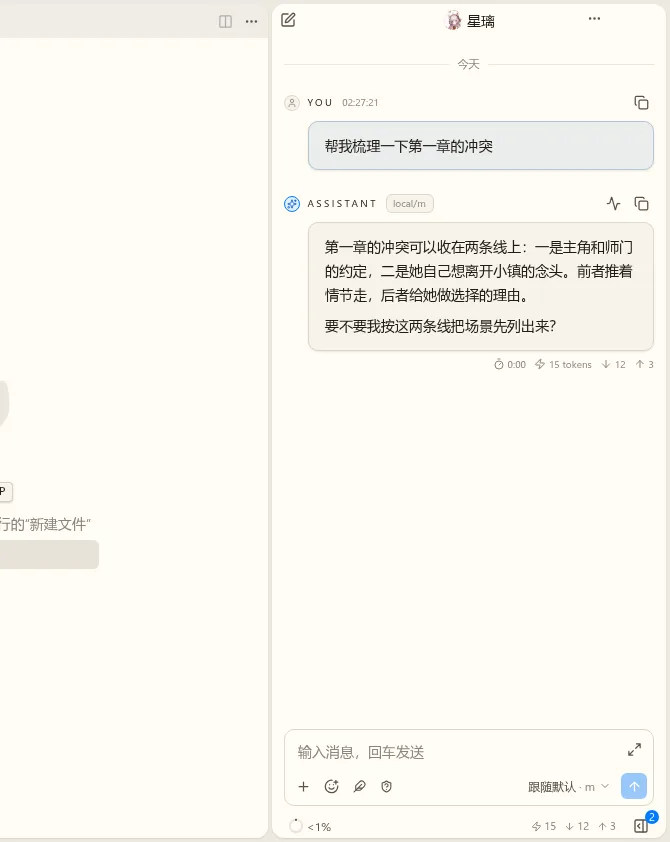
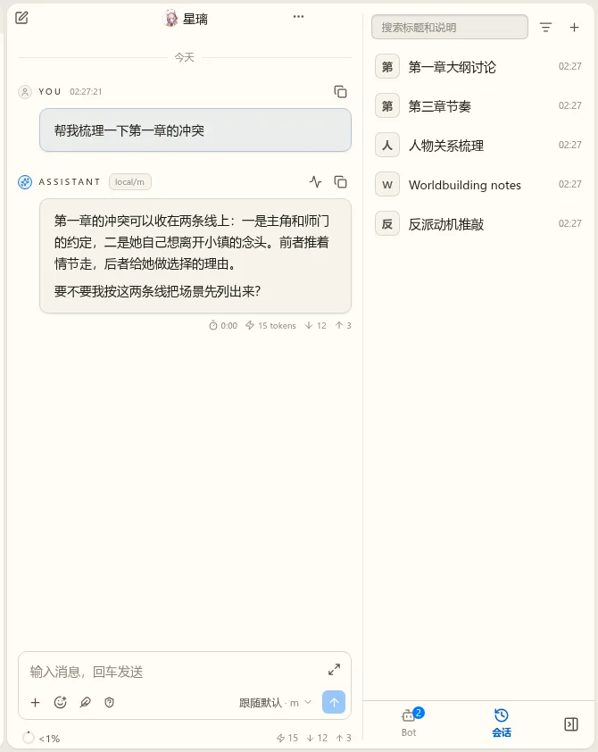
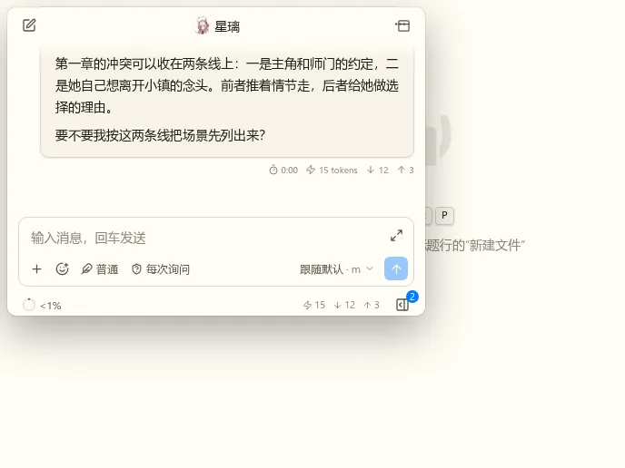
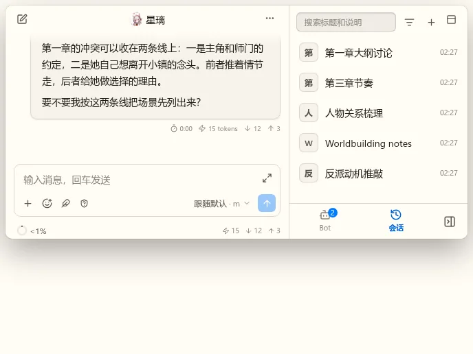
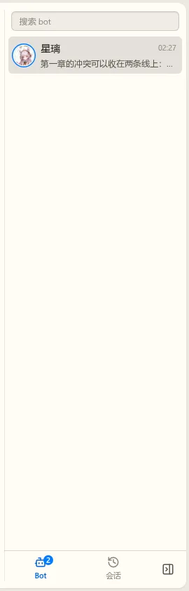

t20 第 2 轮：方向二的底部导航
按这样做：收着时右下角打开列表，展开后列表底部是 Bot｜会话｜收起？
推荐按这样做：按钮一直在右下角，展开后它原地变成导航条最右边的“收起”，Bot、会话从右边滑进来，收起时反过来；“新对话”留在聊天头左上角。
停靠

停靠展开

浮动

浮动展开

Bot 页

直接修，不用答
| 哪里 | 改成什么 |
|---|---|
| 会话页的搜索框 | 占满这一行（现在只有一截，提示文字被截断） |
| “当前作品 / 全部作品” | 挪进筛选菜单，筛选按钮上照旧写生效的个数 |
| 会话没有说明时 | 行只有一行高，不留空的第二行 |
已定
- 浮动窗展开着拖动不再变小；一列按钮对齐到同一条中线；轨宽手柄亮起时是细线（已修并合入）
- 归位后再浮动用上次的位置与大小（已做并合入）
- 停靠时不要窄列，列表按需打开（第 1 轮方向二）；附言：右下角那个按钮展开时放到底部，像 app 的底部导航栏；收起时右下角照样能打开列表
- 列表行按改后的样子：会话首字方块、当前项描边、空第二行不占高（第 1 轮）